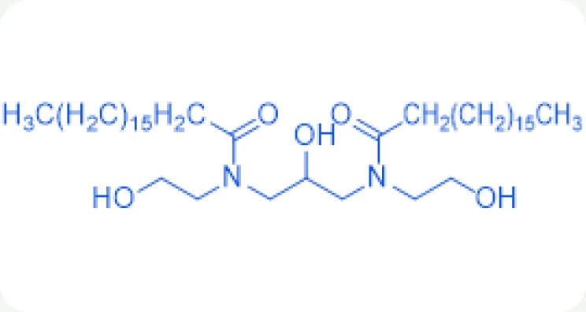
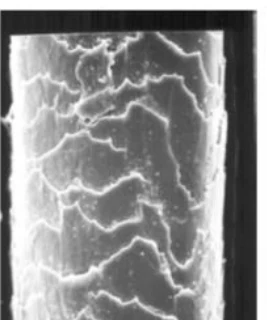
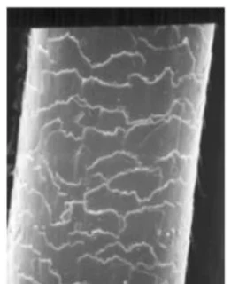
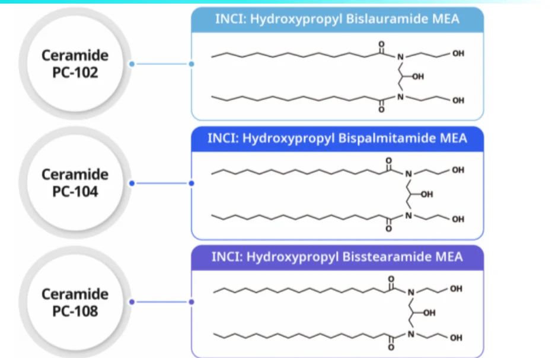

HOME
HOME- 원료소개
- 화장품원료
- Ceramide PC-104
Ingredient research
Ceramide PC-104
피부 장벽 강화를 위한 세라마이드
01 / Overview & Strengths
개요 & 특장점
- 천연 지방산(fatty acids)에서 유래된 세라마이드로써 피부 장벽 강화 기능(Skin barrier function)에 탁월한 효능을 가지고 있습니다.
- 녹는점이 65℃ ~75℃로 가장 보편적으로 사용하시는 Ceramide 입니다.
- 또한 아토피용 제품으로도 사용하시기에 효능이 좋습니다.
※ 자세한 자료는 직접 문의 부탁드립니다.
Product features / Product Strengths
- 보습 효과
- 피부보호 효과
- 두피보호 효과

02 / Technical Information
기술 자료
원료 기본 규격 및 제품 카탈로그
- INCI Name
- Hydroxypropyl Bispalmitamide MEA
- CAS No.
- 211184-47-3
- M.O.Q.
- 1KG
- Pack Size
- 1/10/20 KG
- Appearance
- Powder
- Dosage
- 0.1~5%
03 / Research Data
기타 데이터
Introduction
- 천연 지방산(natural fatty acids)에서 유래한 세라마이드입니다.
- 시중 세라마이드보다 녹는점이 낮아(lower melting point) 제형화가 쉽습니다.
- 시중 Ceramide III와 비슷한 효능을 내면서도 경쟁력 있는 가격(incomparable attractive price)으로 공급합니다.
Before
→3 weeks

After 3 weeks

사용 전 : 큐티클 세포가 들뜨고 오염물이 많은 손상 모발
3주 사용 후 : 큐티클 세포가 고르게 밀착되고 들뜸 · 오염물이 적은 건강한 모발

Ceramide Structure
세라마이드 분자 구조
PC-102 · PC-104 · PC-108은 결합한 지방산 사슬에 따라 Lauramide · Palmitamide · Stearamide 구조로 나뉩니다.
Skin Care스킨케어
- 보습 유지 효과
- 장벽 기능
- 거친 피부 개선
- 피부 기능 활성
- 유연 효과
Hair Care헤어케어
- 탈모 방지
- 모발 성장 촉진
- 비듬 방지
- 아미노산 · 단백질 안정화
- 모발 · 손톱 기능 개선
Commercialized Ceramide Products
- Ceramide PC-102 Hydroxypropyl Bislauramide MEA 1,3-bis(N-2-(hydroxyethyl)lauroylamino)-2-hydroxy propane · 분말 · 가용화 제품용 원료 보기→
-
Ceramide PC-104현재 원료 Hydroxypropyl Bispalmitamide MEA 1,3-bis(N-2-(hydroxyethyl)palmitoylamino)-2-hydroxy propane · 분말 · 유화 제품용
- Ceramide PC-108 Hydroxypropyl Bisstearamide MEA 1,3-bis(N-2-(hydroxyethyl)stearoylamino)-2-hydroxy propane · 분말 · 유화 제품용 원료 보기→
- Ceramide LC S-20 Propylene Glycol, Hydroxypropyl Bisstearamide MEA, Butylene Glycol, Dipropylene Glycol, Behenyl Alcohol, Ceteareth-20, Cholesteryl Isostearate, Squalane, Tricaprylin, Cholesterol, Cetearyl Alcohol, Stearic acid, Dimethicone and Phenoxy Ethanol 원료 보기→
원료 품질 시험 항목 및 기준 · Ceramide PC-104 기준
- Appearance
- White crystalline powder
- Odor
- Odorless
- Solubility
- Oil soluble / Ethanol sparingly soluble
- Identification
- IR (characteristic absorption at 3300㎝-1, 2920㎝-1, 1620㎝-1, 1470㎝-1, 1050㎝-1)
- Loss on drying
- < 1.0%
- Melting point
- 65 ~ 75℃
- Recommended Dosage
- 0.1 ~ 5%